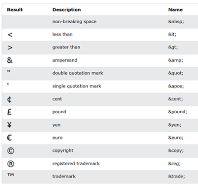

- Exemplo de tag HTML e seletor das CSS
<img src="foto.png" alt="Exemplo de foto"> h1 { font-family: Arial; font-size: 20pt; color: blue; } - Primeiros(as) passos/tags
!- Criação do código base HTML5<p></p>- Criação de parágrafos<br>- Pular linha<hr>- Criação de uma linha horizontalTabela de símbolos especiais:
 <link rel="shortcut icon" href="favicon.io" type="image/x-icon">- Utilização de favicon (dentro da tag head)[link:favicon]<!-- -->- Realizar comentários em HTML😄- Exemplo da utilização de emojis - Hierarquia de títulos
<h1></h1>até o<h6></h6>- Tag para a criação de títuloslorem- "Comando/atalho" para a criação de texto aleatório - Adição de imagens e tags semânticas
<img src="foto.png" alt="Exemplo de foto">- Adicionar imagem (não precisa de fechamento)<address></address>- Adicionar endereço<strong></strong>- Colocar termo em destaque<em></em>- Colocar termo em ênfase<mark></mark>- Inserir texto marcado<del></del>- Inserir texto deletado<ins></ins>- Adicionar texto "inserido"<sup></sup>- Inserir texto localizado em posição superior<sub></sub>- Inserir texto localizado em posição inferior<small></small>- Inserir texto de menor tamanho<q></q>- Inserir citação simples<blockquote cite="link"></blockquote>- Inserir um bloco de citação<abbr tittle="Texto original"></abbr>- Abreviação<pre></pre>- Preservação de formatação<code></code>- Códigos de programação<bdo dir="rtl"><bdo>- Inverter o texto escrito - Listas ordenadas e não ordenadas
<ol type="1" or "a" or "A" or "i" or "I"></ol>- Inserção de lista ordenada<ul type="disc" or "circle" or "square"></ul>- Inserção de lista não ordenada<li></li>- Linhas da lista em questão<dl></dl>- Inserção de lista de definições<dt></dt>- Termo de uma lista de definições<dd></dd>- Descrição de um termo em uma lista de definições - Links
<a href="link" hreflang="language" target="_blank or _self" rel="external or next or prev or nofollow or author"></a>- Link interno ou externo../- Voltar uma pasta em um caminho<a href="pasta/meuarquivo.pdf" download="meuarquivo.pdf" type="application/pdf"></a>- Link para download - Mídias
<picture></picture>- Tags onde o conteúdo serão as imagens utilizadas<source media="(max-width: 0px)" srcset="imagem.jpg" type="image/jpg"></source>- As opções de imagens a depender do tamanho[source:media:type]<audio src="musica.mp3" preload="auto or metadata or none" autoplay controls loop></audio>- Utilização de áudio único<source src="musica.mp3" type="audio/mpeg"></source>- As opções de áudio a depender da compatibilidade[source:src]<video src="video.mp4" controls width="0px" poster="imagens/thumb.jpg" autoplay loop preload="metadata"></video>- Utilização de vídeo único<source src="midia/video.mp4" type="video/mp4"></source>- As opções de vídeo a depender da compatibilidade[source:src] - Estilos CSS
<p style="background-color: yellow;"></p>- Estilo CSS inlineEstilo CSS interno:
<style> body{ background-color: blue; } </style><link rel="stylesheet" href="style.css">- Criação de ligação para o estilo CSS externo[link:css]/* */- Realizar comentários nas CSS